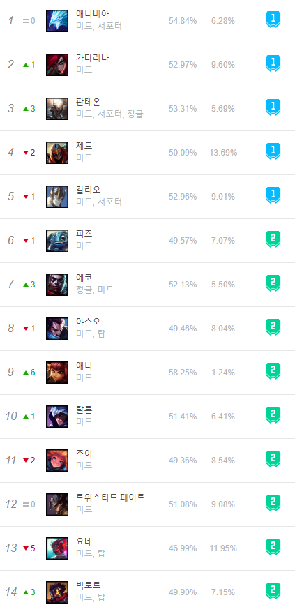

게임에 들어가보면 탑, 미드, 바텀 그리고 정글 라인이 있다.

이곳에서는 미드에 관해서만 집중적으로 탐구해볼 것이다.
미드는 맵의 중단에 위치해있으므로, 영향력을 행사하기 가장 쉬운 라인중 하나이다. 그렇기 때문에 누가 미드를 하느냐에 따라 게임의 승패가 결정될 수도 있다.
사실 어느 라인에 오는 챔피언이 딱딱 정해져있는 것은 아니라지만 유독 미드에서만 자주 보이는 챔피언이 있다.
위 사진본은 2021-01-24기준으로 캡처한 미드 1티어의 사진이다. 위 사진을 보면 다른 라인과 다르게 유독 마법공격력을 사용하는 AP챔피언 그리고 강한 이동기가 있는 챔피언이 많다. 이것은 위에서 설명한 미드의 위치적 역할이 연관되어있지 않다고 하지 않을 수가 없다.